Gemini 3.1 Flash Image × Prompt Engineering Optimization
| 方案 | S1 头像 | S2 编辑 | S3 海报 | S4 角色 | 均分 | 可视化 |
|---|---|---|---|---|---|---|
| 模型直调 (Baseline) | 4.25 | 3.88 | 4.88 | 4.50 | 4.38 | 4.38 |
| 豆包 (Doubao) | 3.88 | 4.75 | 3.75 | 4.25 | 4.16 | 4.16 |
| 最佳新 Skill (Hunyuan CoT) | 4.63 | 4.63 | 5.00 | 4.63 | 4.72 | 4.72 |
| Custom Skill v2 | 5.00 | 4.75 | 5.00 | 4.88 | 4.91 | 4.91 |
用户输入："Turn my selfie into a 90s high school yearbook photo" + 自拍照
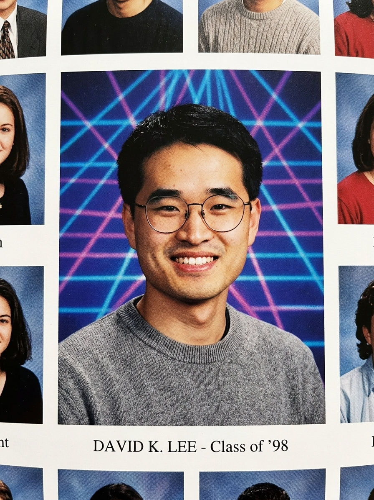
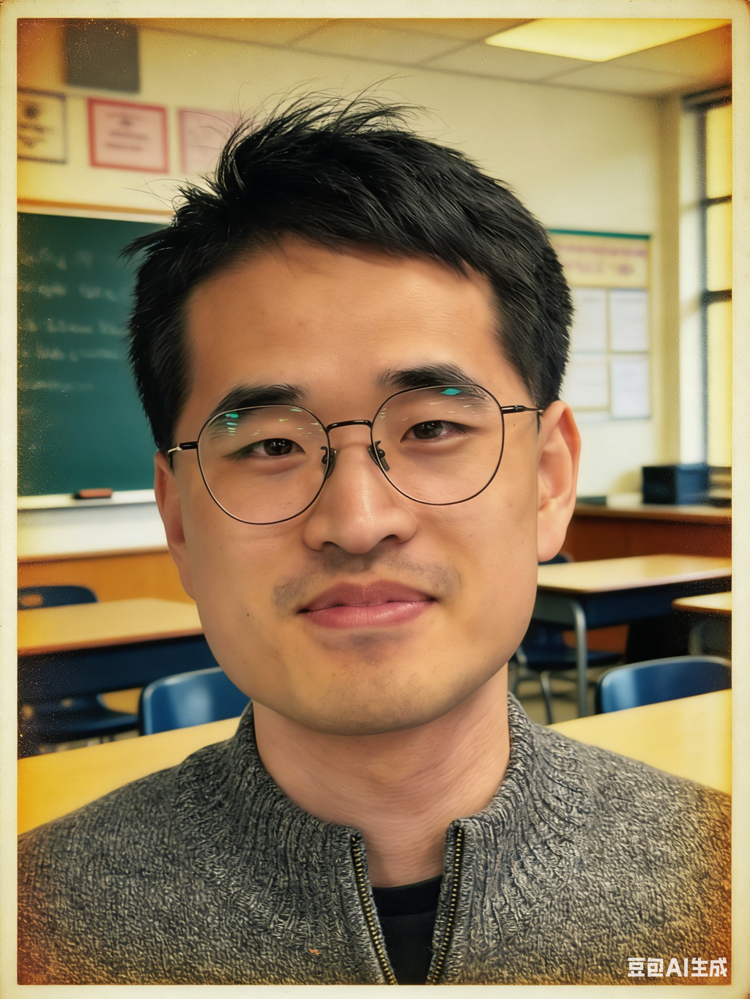
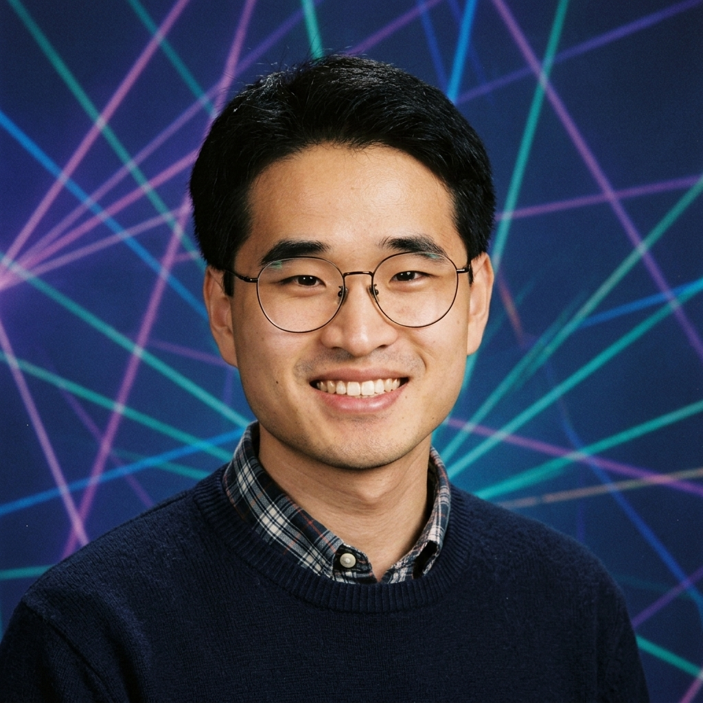
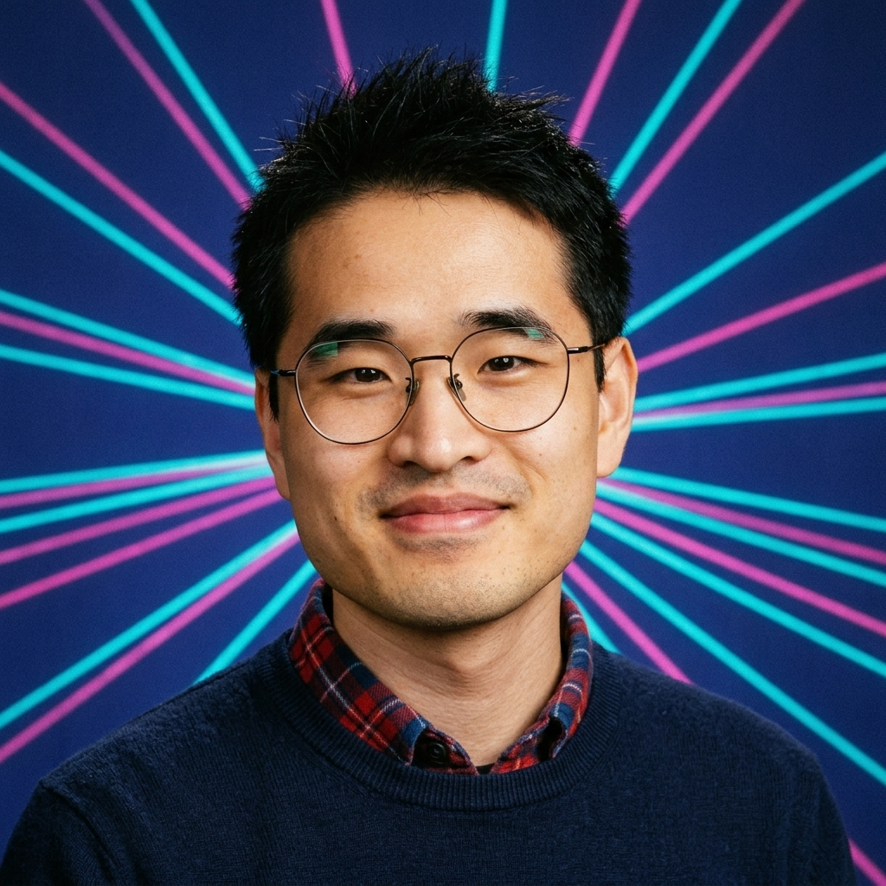
用户输入："Replace the upper-body with a denim jacket" + 户外照片
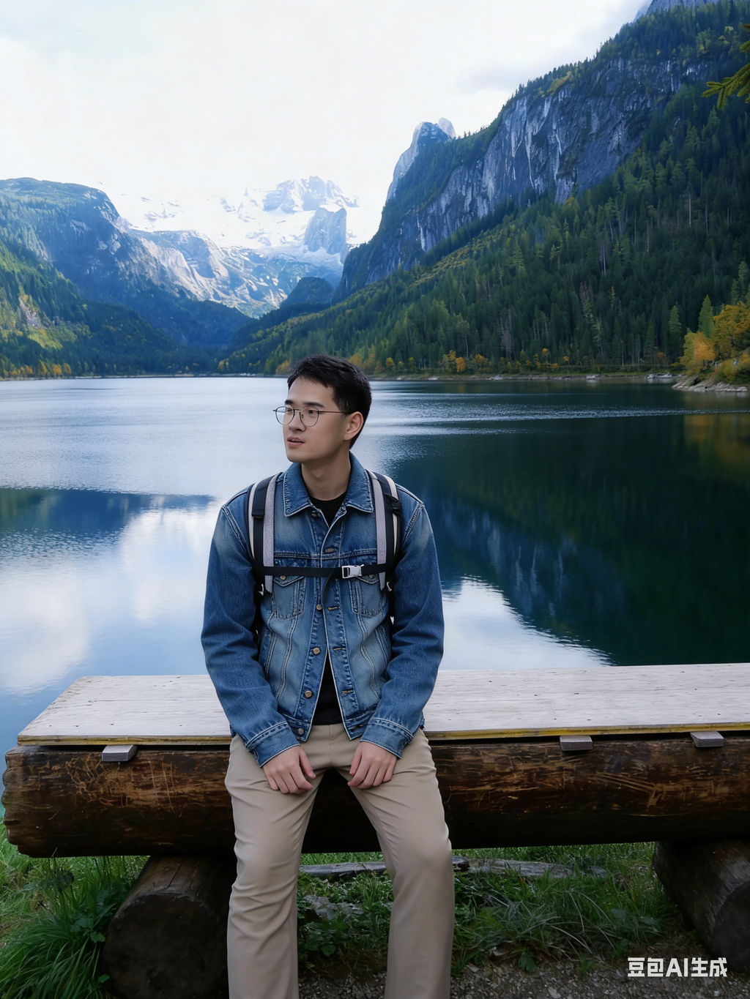
用户输入：UC Berkeley Music Society Spring Auditions 活动海报，需精确渲染 5 行文字
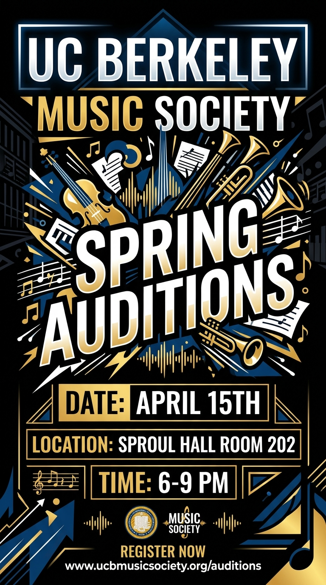
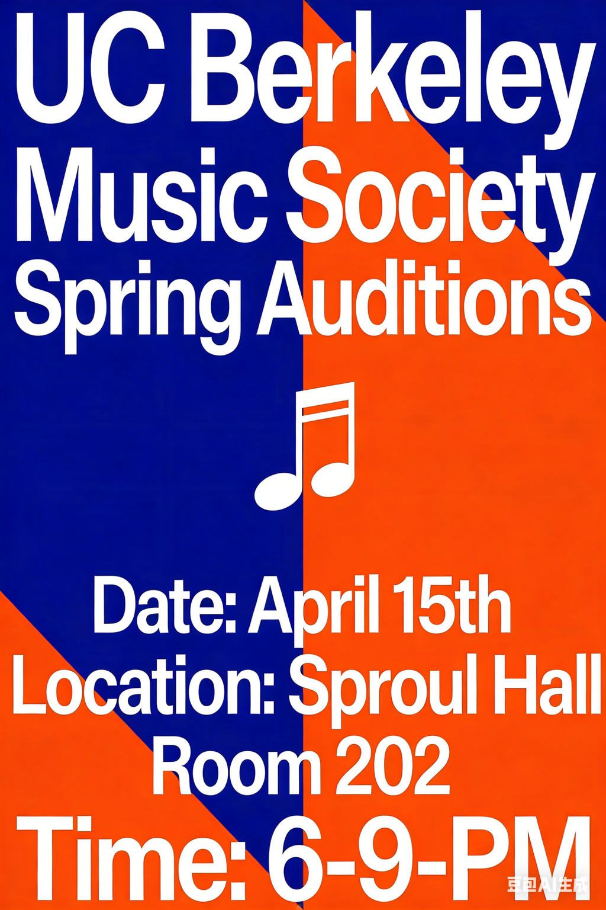
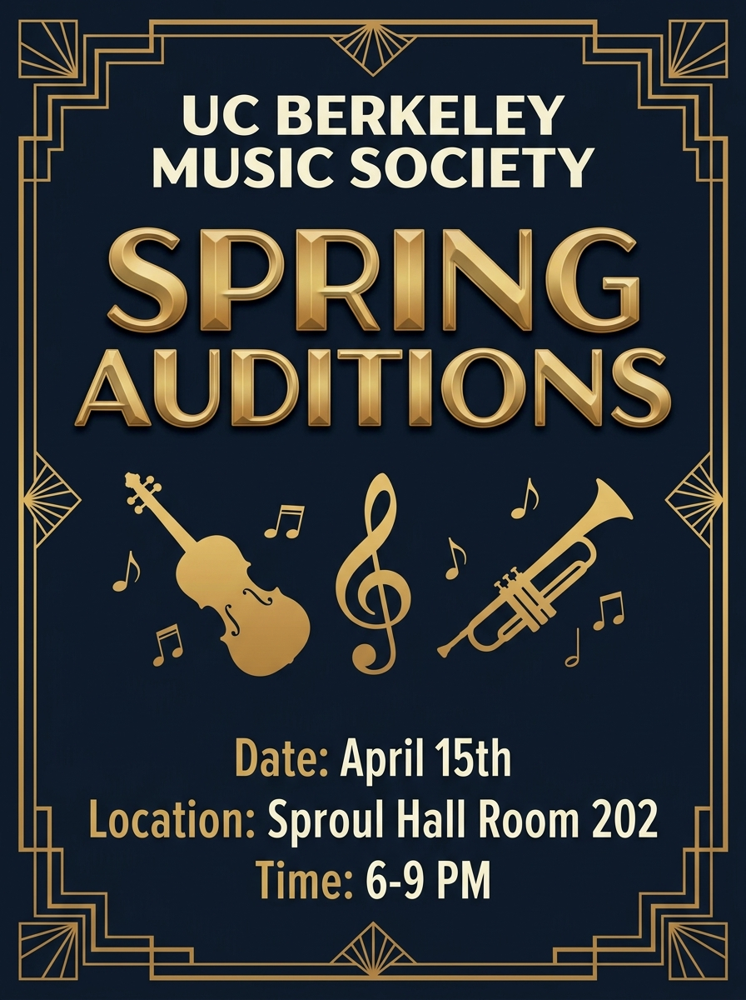
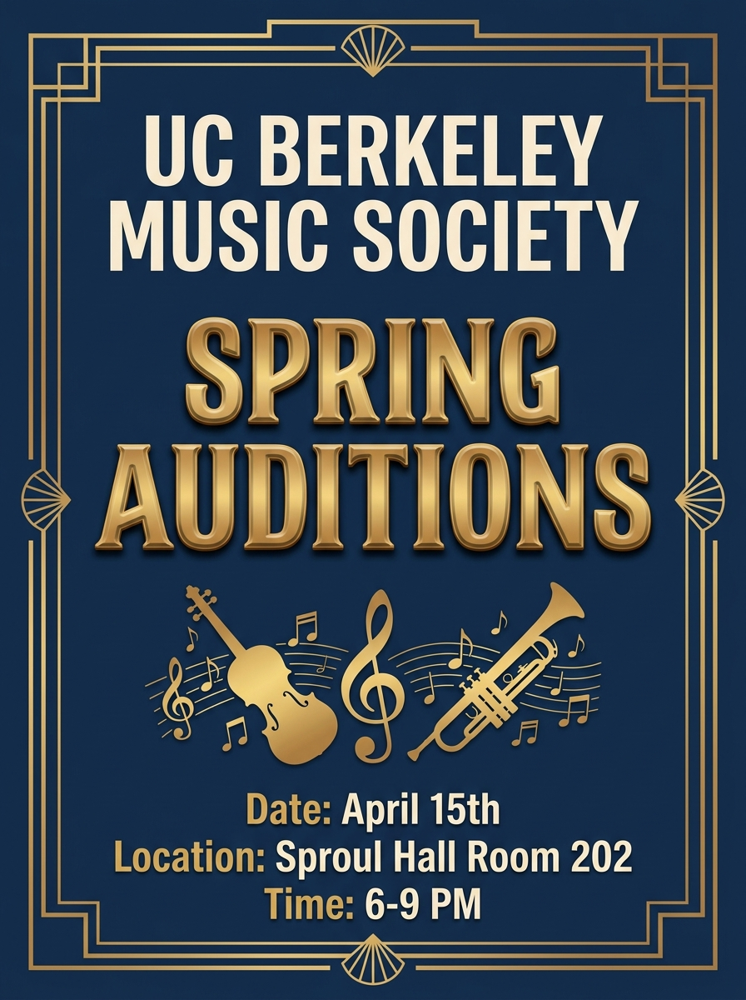
用户输入：Marvel 风格 Cyber-Knight 超级英雄全身概念图
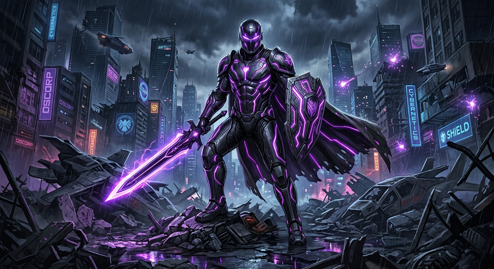
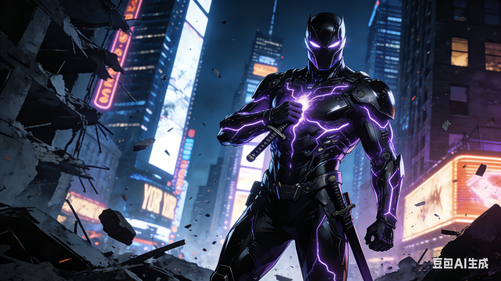
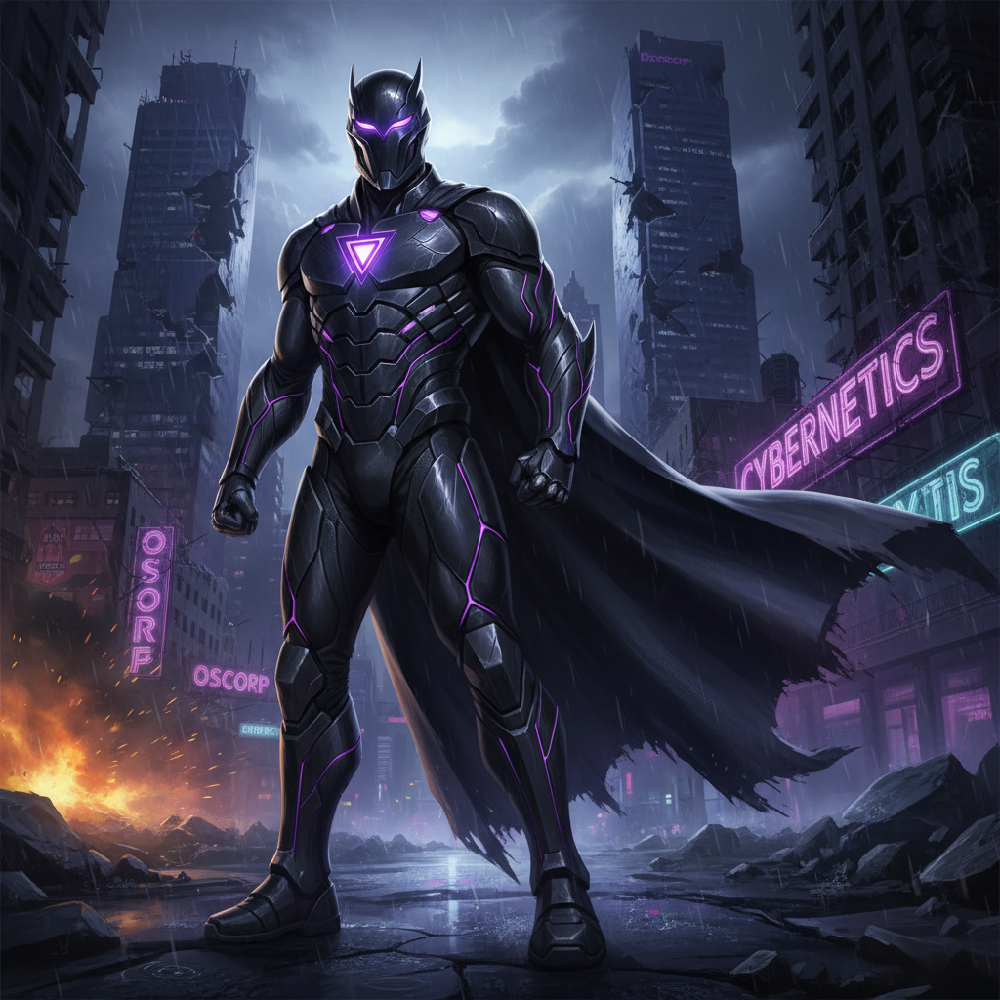
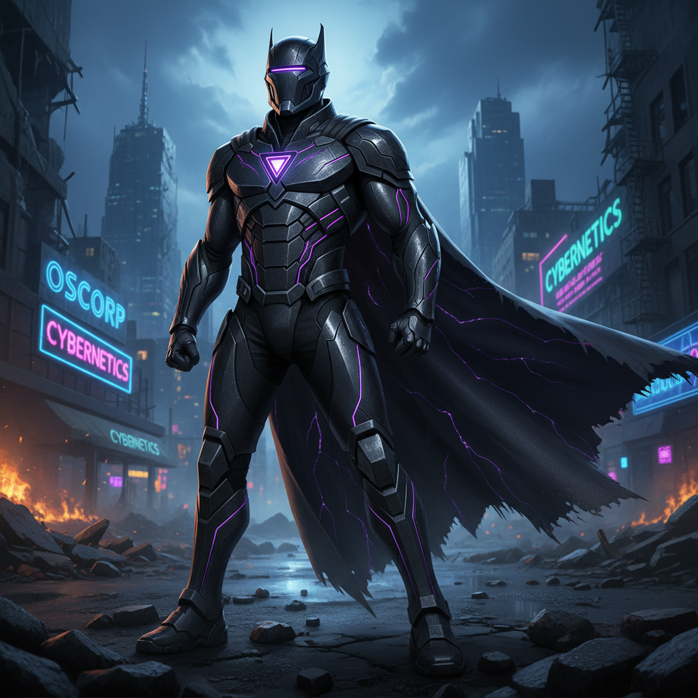
融合自 Hunyuan CoT。每个 prompt 以一句话概述开头，中间按主→次细节展开，以一句"风格锚定"结尾。结尾句像标题一样统一整体美学方向，有效防止概念漂移。
融合自 YouMind 社区模式。海报场景中先用 Line 1-5 逐行指定精确文字和排版属性，再描述设计元素。配合"no misspellings, no text warping"约束，实现 100% 文字准确率。
融合自豆包 S2 的精确编辑思路。编辑场景中按 Face→Hair→Glasses→Hands→Lower body→Accessories→Background 分类列出保留项，确保像素级背景保真。
融合自 Image Cog 和 Skill 1 (nano-banana-prompting)。使用"Kodak Gold 200"/"indigo selvedge denim with contrast-orange chain stitching"/"matte gunmetal finish with metallic flake"等具体材质描述，以及多光源分解。
融合 6 种方法论的 prompt 重写框架，在所有 4 个场景中均达到或接近满分，特别是文字渲染和角色设计场景表现突出。
在 S1 头像和 S3 海报场景中对豆包形成明显优势。S2 编辑场景追平豆包，证明通过精心设计的保留清单可弥补 Gemini 在局部编辑上的天然短板。
验证了 prompt engineering 的价值：同一模型（Gemini 3.1 Flash Image），仅通过 prompt 优化即可获得显著质量提升，无需更换模型或增加成本。